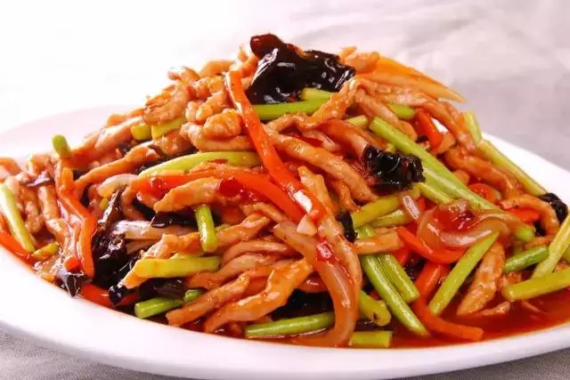
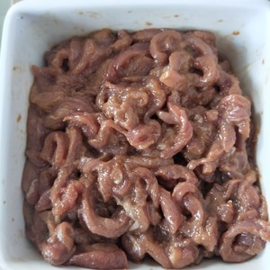
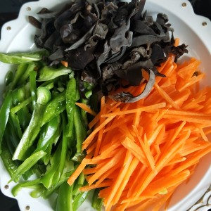
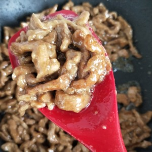
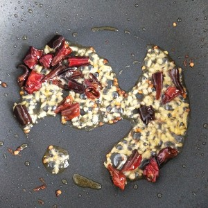
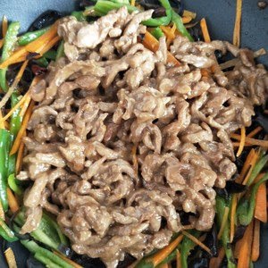
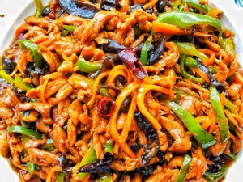

A recipe for Yu-Shiang Shredded Pork
Yuxiang pork shreds belong to sichuan cuisine, which is to cut fresh pork shreds and stir them together with eggs and starch.Add chili, agaric, scallion and bean paste to the wok and stir fry until fragrant.The meat of this dish is smooth, delicious and spicy, suitable for all kinds of people to eat.

The material prepared
Pork tenderloin 500 grams, green pepper 1, carrot half root, wood ear 6, ginger 3 pieces, dry pepper 5, half spoon chicken essence.
Production steps

1 tablespoon light soy sauce, 1 tablespoon dark soy sauce, 1 tablespoon salt, 2 tablespoons starch, 20 grams water, stir well and marinate for 10 minutes.

Shred all vegetables and set aside.

Pour oil into wok, add shredded pork, stir in one direction with chopsticks, fry and discolor dish for later use.

Add the oil to the wok and cook the chilli in a wok to taste.

Stir in vegetables and shredded meat.

Dish out.A fish fragrant shredded pork is ready!